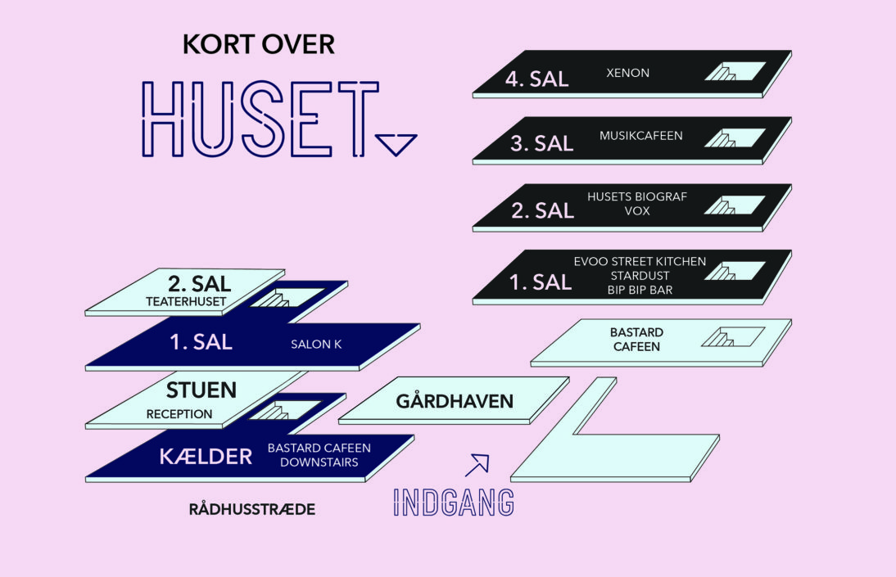
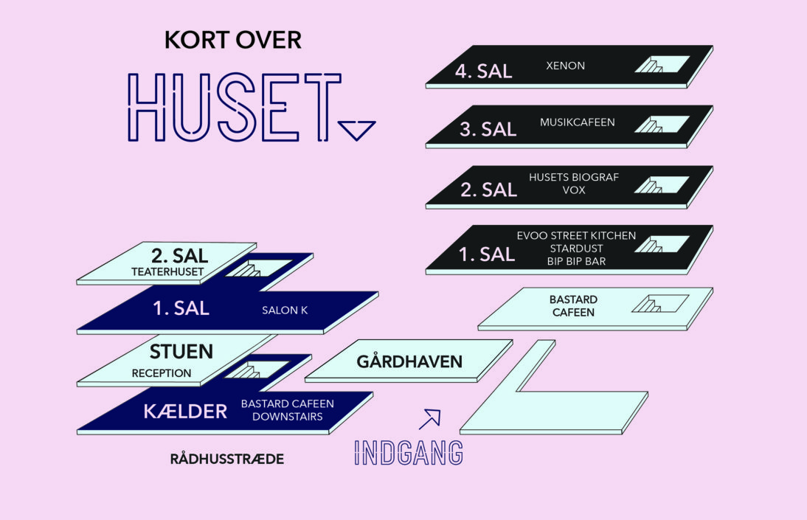

Generelle spørgsmål
Har du generelle spørgsmål vedr. Huset eller Husets events, kan du måske få svar her:
Aldersgrænse
Som udgangspunkt er der ingen aldersbegrænsninger til arrangementer i Huset-KBH. Ved køb af alkohol i baren gælder de lovgivende regler.
Starttidspunkt for arrangementer
Tjek det enkelte arrangement under ’Events’
Beliggenhed
Huset-KBHs hovedindgang befinder sig i Rådhusstræde 13, 1466 København K. Der er også indgang fra Magstræde 14, men denne kan være aflåst.
Billetter
Billetter til de fleste af Husets koncerter kan købes her på Husets hjemmeside.
Enkelte koncerter kan være sat til salg på billetlugen, billetnet, billetto, billetexpressen eller andre platforme – følg forsalgslinket på den enkelte event. – Er der ikke et billetlink, sælges der kun billetter i døren.
Billetter til Husets Biograf kan reserveres pr. mail: Husetsbio.reservation@mail.dk – skriv venligst event eller filmtitel + antal billetter i emnefeltet, og du vil få en bekræftelsesmail.
For andre spørgsmål vedr. Husets Biograf kontakt: jack.stevenson@mail.dk eller tlf: +45 20 29 70 13
Huset-KBH har ikke noget billetkontor, og billetter kan kun købes via web eller i døren på selve dagen.
Foreningen Bag Huset-KBH
Foreningen bag HUSET-KBH er en paraplyforening der samler de uafhængige og kulturudøvende foreninger og aktivitetsgrupper, der er aktivt udøvende i Huset-KBH.
De enkelte foreninger og arrangørgruppers aktiviteter spænder vidt i variation, og er forskellige i deres organisering og virker. Igennem forskelligheden i mellem foreningerne og grupperne er de med til at understrege nogle af de værdier og tanker, som HUSET-KBH repræsenterer og er funderet på:
Historie, unik, original, mangfoldighed, friktion, legesyg, urban, foranderlig, oprør, anarkisme.
Foreningens vigtigste opgave er at være fordrende for andre indholdsskabende foreninger og arrangørgrupper og dermed bidrage til et kreativt, sjovt og interessant hus.
En anden af foreningens opgaver er at fungere som strategisk sparringspartner for HUSETs ledelse og forsøge at forbedre HUSETs faciliteter, såsom teknisk udstyr, inventar og synlighed for den enkelte og Huset som fællesnævner. Det sker hovedsagelig igennem fondsøgning.
Endelig fungerer foreningen, som et samlende socialt organ for alle foreninger og arrangørgrupper i Huset-KBH.
Frivillighed
Meget af den aktivitet der foregår i Huset er baseret på frivillighed. De fleste af Husets foreninger og arrangørgrupper arbejder frivilligt. Siden sommeren 2013 har Huset udvidet sin frivillige indsats ved i gennemsnit at have 100 danske og internationale frivillige til afvikling af events, booking, lyd/lys, bar, PR og band care. Du kan læse om at blive frivillig i Huset her.
Tilgængelighed
Huset-KBH arbejder for god tilgængelighed for alle. Vi tror på at tilgængelighed er mere end fysiske rammer. Tilgængelighed er den gode service og kommunikation, der sørger for at vi kan følges ad og opleve kulturlivet sammen.
Alle uanset køn, religion, seksuel orientering og eventuelt handicap er velkommen i Huset-KBH.
Gangbesværet / kørestolsbruger
Huset-KBH har en godselevator med adgang til Bastard Café, Spisehuset Fair, Stardust, Husets Biograf, Bastarden, Musikcaféen og STAGE. Andre steder i Huset kan være mere besværlige at få adgang til. Spørg personalet for assistance ved ankomst. Hvis man kommer i en større gruppe af gangbesværede/kørestolsbrugere er det os en stor hjælp, hvis I kontakter os på forhånd, så vi sikrer os at kunne tage hånd om jer på bedste vis. Se billeder af Husets lokaler, indgang og parkeringsmuligheder på Godadgang.dk.
Garderobe
Huset-KBH har som hovedregel ikke nogen garderobe. Til enkelte arrangementer kan der være garderobe på eget ansvar. Der er garderobeskabe i Bastard Café og Musikcaféen. Pas på dine ting.
Glemte sager
Alt hittegods glemt i Huset-KBH bliver lagt i en “glemmekasse” på kontoret i stuen og bliver opbevaret i 14 dage. Kontoret kan kontaktes mandag-fredag kl. 11-15 på telefon +45 21 51 21 51
Husorden
Har Huset-KBH en husorden? Ja, læs Husets Husorden her
Kontakt
Huset-KBHs kontor har åbent man-fredag kl. 11-15 og kan kontaktes på telefon +45 21 51 21 51
Narkotika-politik
Huset-KBH accepterer – på trods af sin hippie-historie – ikke indtagelse af nogen form for narkotika ved vores arrangementer. Bliver man taget i overtrædelse af ”Lov om euforiserende stoffer” vil det medføre politianmeldelse og bortvisning.
Nummererede pladser
Der er som regel ingen nummererede pladser, men ved særlige arrangementer og ved alle filmvisninger i Husets Biograf kan pladserne være reserverede. Uanset hvad, er det altid en god idé at komme, når dørene åbner.
Offentlig transport til Huset-KBH
Huset-KBH er centralt placeret i København, tæt på Strøget, Nytorv, Christiansborg og i gå-afstand fra både Hovedbanen og Nørreport station. Derfor er der mange muligheder for at komme til og fra Huset med offentlig transport – også om natten.
Parkering
Huset-KBH har ingen parkeringspladser, og vores placering i det centrale København kan gøre det svært at finde parkering i nærheden. Vi anbefaler, at du tager cyklen eller offentlig transport.
Der er cykelparkering på Vandkunsten overfor Huset. Vi opfordrer til, at man stiller sin cykel der, så man ikke blokerer fortovet foran Husets facade. Det er ikke tilladt at parkere sin cykel i Husets gård af sikkerhedsmæssige årsager. Respekter venligst dette.
Persondata
Ved brug af denne hjemmeside registreres anonymiseret data gennem Google Analytics. Google opbevarer din anonymiserede data i 50 mdr, hvor efter det vil blive slettet. Når du kontakter medarbejdere i Huset via mail eller gennem kontaktformularer videregiver du personlig data. Vi opbevarer ikke dine personlige data eller bruger det til andet end at behandle din sag. Alle oplysninger dvs. mailkoresspondancer vil blive slettet, når sagen er behandlet.
Plakatopsætning i Huset-KBH
Opsætning af plakater i Huset-KBH udføres af Husets PR-ansvarlige, bortset en plakatsøjle i Husets foyer.
Plakater for eksterne arrangementer dvs. arrangementer, der ikke foregår i Huset, må kun hænges op på plakatsøjlen i Husets foyer.
Det er strengt forbudt for andre end Husets medarbejdere at fjerne andres plakat, om denne måtte være privat personers, foreningers eller Husets egne plakater.
Det er strengt forbudt at sætte plakater op på ruder eller ovenpå plakater for andre arrangementer.
Huset-KBH kan, uden ansvar, til enhver tid vælge at fjerne eller flytte plakater, der er sat op uden tilladelse.
Rygning
Rygning er ikke tilladt i Huset-KBH. Der er rygeområde udendørs i gården ved hovedindgangen i Rådhusstræde.
Udsolgte arrangementer
Når et arrangement er anført som udsolgt på Husets hjemmeside, betyder det, at der ikke er flere billetter – hverken i forsalg eller i døren.
Åbningstider (kontor) - dag
Husets kontor har åbent man-fredag 11.00-15.00
Åbningstider - aften
Husets åbningstider varierer i forhold til de enkelte arrangementer, men som tommelfingerregel:
| Mandag: | 20:00 - 01:00 |
|---|---|
| Tirsdag: | 20:00 - 01:00 |
| Onsdag: | 20:00 - 01:00 |
| Torsdag: | 20:00 - 01:00 |
| Fredag: | 20:00 - 02:00 |
| Lørdag: | 20:00 - 02:00 |
| Søndag: | 20.00 - 01:00 |